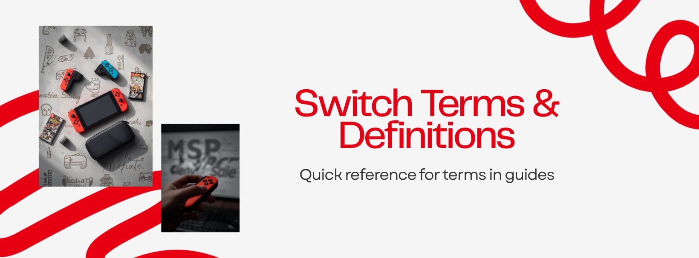

Switch Terms & Definitions
Quick reference for the words you'll see across these guides. If a term in another page confuses you, check here first.
System & Modes
- OFW (Official Firmware) — Nintendo's stock system. Also called "Legit Mode." Safe for online play and eShop, but no homebrew.
- CFW (Custom Firmware) — The modified system that runs your jailbreak features. Lets you install homebrew, run game backups, and use cheats.
- JV / Jailbreak Mode — Our shorthand for booting into CFW. Same thing as CFW mode.
- SysNAND — Your real system memory. Holds the original OFW. We try to keep this untouched on your PremazingPH setup.
- EmuMMC (Emulated System Memory) — A safe copy of the system that lives on your SD card. Your jailbreak runs here so SysNAND stays clean. Two types exist:
- RAW Partition — Hidden partition on the SD card. Faster, more reliable. What we use by default.
- SDFILE — Lives as files on the regular SD card. Easier to set up but more prone to corruption.
Boot & Loader
- Hekate — The bootloader menu you see when you turn on your modded Switch. Lets you pick which mode to boot (CFW EmuMMC, OFW, etc.).
- Atmosphere — The custom firmware itself. Hekate launches it. This is what makes your Switch "jailbroken."
- Daybreak — A homebrew app for installing or restoring full firmware packages without going online.
- Tegraexplorer — A low-level tool inside Hekate's payloads menu for running scripts and editing system files.
Game Files
- NSP — eShop dump format for games, updates, or DLC. Most common file you'll deal with.
- XCI — Cartridge dump format. A direct copy of a physical game card.
- NSZ — A compressed NSP. Smaller download, identical content once installed.
- Super XCI — Special XCI bundle that contains base game + update + DLC in one file. Convenient one-click install.
- Ticket — Authorization data tied to a game file. Some games need a valid ticket to launch in CFW.
Installers & Tools
- DBI — The recommended installer on a modded Switch. Reliable, supports PC transfer, USB, FTP, and direct browsing. Most things in our guides assume DBI.
- HBMenu (Homebrew Menu) — The launcher for homebrew apps like DBI, JKSV, Checkpoint.
- App Mode — Launching homebrew with full system memory and privileges. Hold R while opening a game from the home screen, then pick HBMenu.
- Applet Mode — Launching homebrew via the Album button. Limited memory, some apps misbehave here.
- Tinfoil — Wireless game installer. Convenient but unreliable — depends on third-party servers that go down often. We recommend DBI instead. See our Tinfoil guide.
- ULTRA / ULTRANX — A paid game download service that works directly with DBI. People use it to skip hunting for files on download sites. See our ULTRA guide.
- Goldfoil — PremazingPH's own upcoming alternative to ULTRA. Currently in development.
- JKSV — Homebrew app for backing up and restoring save data.
- Checkpoint — Another save-management app. Similar to JKSV with a different interface.
- Sphaira — Newer game installer some users prefer as a DBI alternative.
- Kefir — A modified Atmosphere build that some users run for compatibility with certain installers.
Patches & Safety
- Sigpatches — Files that bypass Nintendo's signature checks so unsigned games (your backups) can launch. Without them, games crash. Must match your CFW version.
- sys-patch — A modern alternative to traditional sigpatches. Loads automatically on boot, requires fewer manual updates. Increasingly the recommended approach.
- dns-mitm — A custom DNS configuration that lets your Switch reach the internet but blocks Nintendo's servers. Helps avoid bans by preventing telemetry.
- Modchip — Hardware solder-mod (Picofly, HWFLY) that enables jailbreak on consoles that can't be jailbroken via software anymore. Most newer Switches need one.
- Picofly — The current go-to modchip. RP2040-based. Reliable when installed correctly.
Useful to know
- Sthetix, MrMario, LotusTech — Trusted YouTube creators we link to for video walkthroughs.
- NSWTL — A torrent/Telegram source for game files. Mentioned in our downloads guide.
- nxbrew, ns2w, nswgame, ziperto — Common game download sites. We don't link them — Google them yourself.
- Sandisk — Recommended SD card brand for the Switch. Most reliable in our experience.
If you run into a term we missed, send us a message and we'll add it.